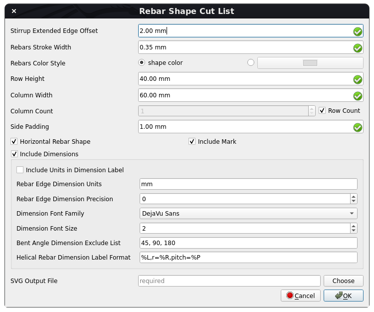

Reinforcement BarShapeCutList/fr
|
Reinforcement Nomenclature de façonnage |
| Emplacement du menu |
|---|
| Aucun |
| Ateliers |
| Reinforcement |
| Raccourci par défaut |
| Aucun |
| Introduit dans la version |
| 0.19 |
| Voir aussi |
| Aucun |
Description
L'outil Nomenclature de façonnage permet à l'utilisateur de créer une nomenclature de façonnage des armatures.
Cet outil fait partie de l'atelier Reinforcement, un atelier externe qui peut être installé avec le  gestionnaire des extensions.
gestionnaire des extensions.
{kind=link}
Nomenclature de façonnage d'armatures
Utilisation
1. Sélectionnez les objets Arch Armatures et Rebar2 que vous souhaitez inclure dans la nomenclature de façonnage des armatures ou sélectionnez les objets Arch Structure à inclure aux Arch Armatures et les objets Rebar2 hébergés par ceux-ci dans la nomenclature de façonnage des armatures. Si rien n'est sélectionné, la nomenclature de façonnage des armatures sera générée pour tous les objets Arch Armatures et Rebar2 présents dans le modèle.
{kind=link}
{kind=link}
2. Sélectionnez ensuite Rebar Shape Cut List dans les outils d'armature.
{kind=link}
3. Une boîte de dialogue apparaîtra à l'écran, comme indiqué ci-dessous.

Boîte de dialogue de l'outil Nomenclature de façonnage des armatures
{kind=link}
4. Modifiez les données en fonction de vos besoins.
7. Cliquez sur OK ou Apply pour générer la Nomenclature de façonnage des armatures.
6. Cliquez sur Annuler pour quitter la fenêtre de dialogue.
Propriétés
Général :
- DonnéesStirrup Extended Edge Offset : décalage des bords d'extrémité étendus de l'étrier, de sorte que les bords d'extrémité de l'étrier avec un angle de pliage de 90 degrés ne se chevauchent pas avec les bords de l'étrier.
- DonnéesRebars Stroke Width : largeur de trait des armatures dans la nomenclature de façonnage.
- DonnéesRebars Color Style : style de couleur des armatures.
- DonnéesRow Height : hauteur de chaque ligne de forme d'armature dans la nomenclature de façonnage.
- DonnéesColumn Width : largeur de chaque colonne de forme d'armature dans la nomenclature de façonnage.
- DonnéesColumn Count : nombre de colonnes dans la nomenclature de façonnage.
- DonnéesSide Padding : rembourrage de chaque côté de la forme de l'armature.
- DonnéesHorizontal Rebar Shape : si True, alors la forme de l'armature sera rendue horizontale en faisant pivoter le bord de longueur maximale de la forme d'armature.
- DonnéesInclude Mark : si elle est définie sur True, alors rebar.Mark sera inclus pour chaque forme d'armature dans la nomenclature de façonnage.
- DonnéesSVG Output File : fichier de sortie pour écrire le SVG de la nomenclature de façonnage.
Données de dimension :
- DonnéesInclude Dimensions : si True, les dimensions de chaque arête d'armature et les cotes d'angle plié seront incluses dans la nomenclature de façonnage.
- DonnéesInclude Units in Dimension Label : si la valeur est True, les unités de longueur de bord d'armature seront affichées dans l'étiquette de dimension.
- DonnéesRebar Edge Dimension Units : unités à utiliser pour les dimensions de longueur de bord d'armature.
- DonnéesRebar Edge Dimension Precision : nombre de décimales à afficher pour la longueur du bord de l'armature comme étiquette de cote.
- DonnéesDimension Font Family : famille de polices du texte de dimension.
- DonnéesDimension Police Size : taille de la police du texte de dimension.
- DonnéesBent Angle Dimension Exclude List : liste des angles pliés pour ne pas inclure leurs dimensions.
- DonnéesHelical Rebar Dimension Label Format : format de l'étiquette de dimension d'armature hélicoïdale. Par exemple : "%L,r=%R,pitch=%P" où %L -> Longueur de l'armature hélicoïdale, %R -> Rayon d'hélice de l'armature hélicoïdale, %P -> Pas d'hélice de l'armature hélicoïdale.
Script
Voir aussi : Arch API, Reinforcement API et FreeCAD Débuter avec les scripts.
L'outil Nomenclature de façonnage peut être utilisé dans des macros et à partir de la console Python à l'aide des fonctions suivantes :
Créer la forme d'une armature en SVG
getRebarShapeSVG(
rebar,
view_direction: Union[FreeCAD.Vector, WorkingPlane.Plane] = FreeCAD.Vector(0, 0, 0),
include_mark: bool = True,
stirrup_extended_edge_offset: float = 2,
rebar_stroke_width: float = 0.35,
rebar_color_style: str = "shape color",
include_dimensions: bool = True,
rebar_dimension_units: str = "mm",
rebar_length_dimension_precision: int = 0,
include_units_in_dimension_label: bool = False,
bent_angle_dimension_exclude_list: Tuple[float, ...] = (45, 90, 180),
dimension_font_family: str = "DejaVu Sans",
dimension_font_size: float = 2,
helical_rebar_dimension_label_format: str = "%L,r=%R,pitch=%P",
scale: float = 1,
max_height: float = 0,
max_width: float = 0,
side_padding: float = 1,
horizontal_shape: bool = False,
) -> ElementTree.Element
- Génère et renvoie un élément SVG de forme d'armature pour un objet
rebardonné. - L'objet
rebarpeut être de type <ArchRebar._Rebar> ou <rebar2.BaseRebar>, pour générer sa forme SVG. view_directionspécifie la direction du viewpoint pour la forme de l'armature. Il peut être de typeFreeCAD.VectorouWorkingPlane.Planebien queWorkingPlane.Planesoit préféré.include_markspécifie si rebar.Mark doit être inclus dans le SVG de forme d'armature ou non.stirrup_extended_edge_offsetest le décalage des bords d'extrémité étendus de l'étrier, de sorte que les bords d'extrémité de l'étrier avec un angle plié à 90 degrés ne se chevauchent pas avec les bords de l'étrier.rebar_stroke_widthspécifie la largeur de trait de l'armature en SVG.rebar_color_stylespécifie le style de couleur de l'armature. Il peut s'agir de "couleur de forme" ou "nom_couleur ou valeur_hexique_de_couleur". "couleur de forme" signifie sélectionner la couleur de la forme de l'armature.include_dimensionsspécifie si chaque dimension d'arête d'armature et les dimensions d'angle plié doivent être incluses dans le SVG de forme d'armature.rebar_dimension_unitsspécifie les unités à utiliser pour les dimensions de longueur d'armature.rebar_length_dimension_precisionspécifie le nombre de décimales à afficher pour la longueur de l'armature en tant qu'étiquette de dimension. Définissez-le sur Aucun pour utiliser la précision d'unité préférée de l'utilisateur dans les préférences d'unité de FreeCAD.include_units_in_dimension_labelspécifie si les unités de longueur d'armature doivent être affichées dans l'étiquette de dimension.bent_angle_dimension_exclude_listspécifie la liste des angles pliés pour ne pas inclure leurs dimensions.dimension_font_familyspécifie la famille de polices du texte de cote.dimension_font_sizespécifie la taille de la police du texte de cote.helical_rebar_dimension_label_formatspécifie le format de l'étiquette de dimension d'armature hélicoïdale. Par exemple. "%L,r=%R,pitch=%P" où:
%L -> Longueur de l'armature hélicoïdale %R -> Rayon d'hélice de l'armature hélicoïdale %P -> Pas d'hélice de l'armature hélicoïdale
scalespécifie la valeur d'échelle pour mettre à l'échelle le SVG d'armature. Le paramètre d'échelle aide à réduire rebar_stroke_width et dimension_font_size pour les rendre indépendants de la résolution. Si max_height ou max_width est défini sur une valeur différente de zéro, le paramètre d'échelle sera ignoré.max_heightspécifie la hauteur maximale du SVG de forme d'armature. Définissez-le sur 0 pour avoir une hauteur de SVG de forme d'armature basée sur le paramètre d'échelle.max_widthspécifie la largeur maximale du SVG de forme d'armature. Définissez-le sur 0 pour avoir une largeur de SVG de forme d'armature basée sur le paramètre d'échelle.side_paddingspécifie le rembourrage de chaque côté de la forme de l'armature.horizontal_shapespécifie si la forme d'armature doit être rendue horizontale en faisant pivoter le bord de longueur maximale de la forme d'armature.
Exemple
from pathlib import Path
from xml.dom import minidom
from xml.etree import ElementTree
import Draft, Arch, Stirrup
from RebarShapeCutList import RebarShapeCutListfunc
Rect = Draft.makeRectangle(400, 400)
Structure = Arch.makeStructure(Rect, height=1600)
Structure.ViewObject.Transparency = 80
FreeCAD.ActiveDocument.recompute()
Rebar = Stirrup.makeStirrup(
20, 20, 20, 20, 20, 90, 4, 8, 2, True, 10, Structure, "Face6"
)
rebar_shape_svg = RebarShapeCutListfunc.getRebarShapeSVG(
Rebar,
view_direction=FreeCAD.Vector(0, 0, 0),
include_mark=True,
stirrup_extended_edge_offset=2,
rebar_stroke_width=0.35,
rebar_color_style="shape color",
include_dimensions=True,
rebar_dimension_units="mm",
rebar_length_dimension_precision=0,
include_units_in_dimension_label=True,
bent_angle_dimension_exclude_list=(45, 90, 180),
dimension_font_family="DejaVu Sans",
dimension_font_size=2,
helical_rebar_dimension_label_format="%L,r=%R,pitch=%P",
scale=1,
max_height=100,
max_width=100,
side_padding=1,
horizontal_shape=False,
)
output_file = str(Path.home() / "StirrupRebarShape.svg")
with open(output_file, "w", encoding="utf-8") as f:
f.write(
minidom.parseString(
ElementTree.tostring(rebar_shape_svg, encoding="unicode")
).toprettyxml(indent=" ")
)
Créer la nomenclature de façonnage d'armatures en SVG
getRebarShapeCutList(
base_rebars_list: Optional[List] = None,
view_directions: Union[
Union[FreeCAD.Vector, WorkingPlane.Plane],
List[Union[FreeCAD.Vector, WorkingPlane.Plane]],
] = FreeCAD.Vector(0, 0, 0),
include_mark: bool = True,
stirrup_extended_edge_offset: float = 2,
rebars_stroke_width: float = 0.35,
rebars_color_style: str = "shape color",
include_dimensions: bool = True,
rebar_edge_dimension_units: str = "mm",
rebar_edge_dimension_precision: int = 0,
include_units_in_dimension_label: bool = False,
bent_angle_dimension_exclude_list: Union[Tuple[float, ...], List[float]] = (
45,
90,
180,
),
dimension_font_family: str = "DejaVu Sans",
dimension_font_size: float = 2,
helical_rebar_dimension_label_format: str = "%L,r=%R,pitch=%P",
row_height: float = 40,
column_width: float = 60,
column_count: Union[int, Literal["row_count"]] = "row_count",
side_padding: float = 1,
horizontal_rebar_shape: bool = True,
output_file: Optional[str] = None,
) -> ElementTree.Element
- Génère et renvoie un élément SVG de liste de coupe de forme d'armature pour
base_rebars_list. base_rebars_listest une liste d'objets <ArchRebar._Rebar> ou <rebar2.BaseRebar>, pour générer leur liste de coupe RebarShape. S'il n'est pas fourni, tous les objets ArchRebars et rebar2.BaseRebar avec une marque unique d'ActiveDocument seront sélectionnés et les armatures sans marque attribuée seront ignorées.view_directionsest une liste de directions de viewpoint pour chaque forme d'armature. Il peut être de typeFreeCAD.VectorouWorkingPlane.PlaneOU leur liste. Gardez-leFreeCAD.Vector(0, 0, 0)pour choisir automatiquement view_directions.include_markspécifie si rebar.Mark doit être inclus pour chaque forme d'armature dans la liste de coupe de forme d'armature SVG ou non.stirrup_extended_edge_offsetspécifie le décalage des bords d'extrémité étendus de l'étrier, de sorte que les bords d'extrémité de l'étrier avec un angle plié à 90 degrés ne se chevauchent pas avec les bords de l'étrier.rebars_stroke_widthspécifie la largeur de trait des armatures en SVG de liste de coupe de forme d'armature.rebars_color_stylespécifie le style de couleur des armatures. Il peut s'agir de "shape color" ou "color_name ou hex_value_of_color". "shape color" signifie sélectionner la couleur de la forme de l'armature.include_dimensionsspécifie si les dimensions de chaque arête d'armature et les cotes d'angle plié doivent être incluses dans la liste de coupe des formes d'armature.rebar_edge_dimension_unitsspécifie les unités à utiliser pour les dimensions de longueur d'arête d'armature.rebar_edge_dimension_precisionspécifie le nombre de décimales à afficher pour la longueur de l'armature comme étiquette de dimension. Définissez-le sur Aucun pour utiliser la précision d'unité préférée de l'utilisateur dans les préférences d'unité de FreeCAD.include_units_in_dimension_labelspécifie si les unités de longueur d'arête des armatures doivent être affichées dans l'étiquette de dimension.bent_angle_dimension_exclude_listspécifie la liste des angles pliés pour ne pas inclure leurs dimensions.dimension_font_familyspécifie la famille de polices du texte de cote.dimension_font_sizespécifie la taille de la police du texte de cote.helical_rebar_dimension_label_formatspécifie le format de l'étiquette de dimension d'armature hélicoïdale. Par exemple. "%L,r=%R,pitch=%P" où:
%L -> Longueur de l'armature hélicoïdale %R -> Rayon d'hélice de l'armature hélicoïdale %P -> Pas d'hélice de l'armature hélicoïdale
row_heightspécifie la hauteur de chaque ligne de forme d'armature dans la liste de coupe de forme d'armature.column_widthspécifie la largeur de chaque ligne de forme d'armature dans la liste de coupe de forme d'armature.column_countspécifie le nombre de colonnes dans la liste de coupe de forme d'armature. Définissez-le sur "row_count" pour avoir column_count <= row_countside_paddingspécifie le remplissage de chaque côté de la forme d'armature dans la liste de coupe de forme d'armature.horizontal_rebar_shapespécifie si la forme de l'armature doit être rendue horizontale en faisant pivoter le bord de longueur maximale de la forme de l'armature.output_filespécifie le fichier de sortie pour écrire le SVG de la liste de coupe de forme d'armature générée.
Exemple
from pathlib import Path
import FreeCAD, Draft, Arch
from ColumnReinforcement import SingleTie
from RebarShapeCutList import RebarShapeCutListfunc
Rect1 = Draft.makeRectangle(400, 400)
Structure1 = Arch.makeStructure(Rect1, height=1600)
Structure1.ViewObject.Transparency = 80
Rect2 = Draft.makeRectangle(500, 500)
Structure2 = Arch.makeStructure(Rect2, height=1600)
Structure2.ViewObject.Transparency = 80
Structure2.Placement = FreeCAD.Placement(FreeCAD.Vector(1000, 0, 0), FreeCAD.Rotation(FreeCAD.Vector(0, 0, 1), 0))
FreeCAD.ActiveDocument.recompute()
# Create Straight Rebars
rebar_group = SingleTie.makeSingleTieFourRebars(
l_cover_of_tie=40,
r_cover_of_tie=40,
t_cover_of_tie=40,
b_cover_of_tie=40,
offset_of_tie=100,
bent_angle=135,
extension_factor=8,
dia_of_tie=8,
number_spacing_check=True,
number_spacing_value=10,
dia_of_rebars=16,
t_offset_of_rebars=40,
b_offset_of_rebars=40,
rebar_type="StraightRebar",
hook_orientation="Top Inside",
hook_extend_along="x-axis",
l_rebar_rounding=None,
hook_extension=None,
structure=Structure1,
facename="Face6",
).rebar_group
# Assign Mark to straight rebars
for straight_rebar in rebar_group.RebarGroups[1].MainRebars:
straight_rebar.Mark = "main_sb"
# Create LShaped Rebars with hook along x-axis
rebar_group = SingleTie.makeSingleTieFourRebars(
l_cover_of_tie=40,
r_cover_of_tie=40,
t_cover_of_tie=40,
b_cover_of_tie=40,
offset_of_tie=100,
bent_angle=90,
extension_factor=8,
dia_of_tie=8,
number_spacing_check=True,
number_spacing_value=10,
dia_of_rebars=16,
t_offset_of_rebars=-40,
b_offset_of_rebars=-40,
rebar_type="LShapeRebar",
hook_orientation="Top Outside",
hook_extend_along="x-axis",
l_rebar_rounding=2,
hook_extension=100,
structure=Structure2,
facename="Face6",
).rebar_group
# Assign Mark to lshape rebars
for lshape_rebar in rebar_group.RebarGroups[1].MainRebars:
lshape_rebar.Mark = "main_lb"
output_file = str(Path.home() / "RebarShapeCutList.svg")
# Create Rebar Shape Cut List for all base rebars in model
RebarShapeCutListfunc.getRebarShapeCutList(
base_rebars_list=None,
view_directions=FreeCAD.Vector(0, 0, 0),
include_mark=True,
stirrup_extended_edge_offset=2,
rebars_stroke_width=0.35,
rebars_color_style="shape color",
include_dimensions=True,
rebar_edge_dimension_units="mm",
rebar_edge_dimension_precision=0,
include_units_in_dimension_label=False,
bent_angle_dimension_exclude_list=(45, 90, 180),
dimension_font_family="DejaVu Sans",
dimension_font_size=2,
helical_rebar_dimension_label_format="%L,r=%R,pitch=%P",
row_height=40,
column_width=60,
column_count="row_count",
side_padding=1,
horizontal_rebar_shape=True,
output_file=output_file,
)